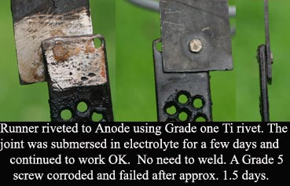

Putting the Anode to work
The Anode must first have a good electrical
connection that will carry heavy currents for a period of months
in a cell. This has been discussed before in Metal/graphite
connections for massive LD Anodes.
After the connection has been made the Anode must be put into
the cell so that no salts will get to the connection. In my opinion the best
first line of defence is to operate the Anode in a sealed cell. The cell will
have a vent tube. See figure for a suggestion for to install the anode in a
cell. When using a Titanium substrate Anode the problem of achieving a good long term electrical
connection to the Anode is already solved. The Titanium substrate can simply be extended
as much as you want to take it out of the cell and above the lid. Simply bolting (or welding if you have a spot welder) a Titanium strap to the substrate will work even if the joint is in or close to the solution. This was shown to work by pdfbq from AmateurPyro with a Platinum mesh Anode + Ti strap + homemade Ti rivets as per the picture. (Note: Anode (riveted to strap) is shown sitting on top of a Cathode)
Another Anode riveted to an extension strap of Ti is shown below. A Grade five (6Al4V Ti alloy) was used for joining but the screw corroded after a day or so. A Grade one rivet was made and squeezed into service. There is no corrosion of Grade one. Grade 1 to 4 bolts will be impossible to find and a homemade rivet is what you will need. Do not hammer rivet as this may damage the Anode. Hold Anode and strap tightly together using a pincers and squeeze the rivet in a vice.

![[DIAGRAM OF ANODE SEALED IN CELL]](sealed.gif) Polyester resin (sold in car accessory
shops, resin + hardener, it is a liquid and is NOT the same as 'car body
filler') is very good for sealing around the Anode, it 'wets' the Lead Dioxide or Titanium
and stops salts from creeping up the Anode out of the cell. Hotmelt glue and
silicon sealer have been used next to the Anode but IMHO they are not as good as
they will not actually 'wet' the Lead Dioxide but only sit against it and the
salts will come creeping up along the inevitable gap the exists between them and
the Anode surface.
Polyester resin (sold in car accessory
shops, resin + hardener, it is a liquid and is NOT the same as 'car body
filler') is very good for sealing around the Anode, it 'wets' the Lead Dioxide or Titanium
and stops salts from creeping up the Anode out of the cell. Hotmelt glue and
silicon sealer have been used next to the Anode but IMHO they are not as good as
they will not actually 'wet' the Lead Dioxide but only sit against it and the
salts will come creeping up along the inevitable gap the exists between them and
the Anode surface.
A piece of plastic is cut to a suitable shape for to place on the Anode, a
washer shaped piece is needed for a circular shaped anode and a long piece with
a slit cut in it is needed for a filtration reinforced type Anode. The hot melt
or silicon sealer (builders caulk) is placed underneath the plastic piece along
the Anode and also in a ring around the Anode on the top surface of the plastic,
as per the diagram. This is to stop the liquid resin from flowing away until it
sets. The resin is poured into the area around the Anode where it flows into the
gap between the plastic piece and the Anode and seals it. The Anode, with the
plastic piece can now be placed into the hole in the lid of the cell and some
silicon sealer or hotmelt used to hold it there and seal between the
plastic piece attached to the Anode and the lid.
It is advisable to use a separate piece of plastic
to seal around the Anode as per above because if you seal the anode into the lid
directly it can be difficult to remove the lid together with cathodes and
connections if you want to inspect the Anode. It depends on your particular set
up. The piece of plastic that is attached to the Anode should be seen as part of
the Anode.
A word regarding copper contamination.
Copper is used in the plating bath
and when using porous substrates (and perhaps non porous substrates) some of the
plating solution will have penetrated into the substrate or may be incorporated
in the electrodeposited Lead Dioxide. Copper is BAD news when dealing with
Chlorates/Perchlorates, especially Ammonium Perchlorate. It would be advisable
to be aware of this when using the first batch or so of product that your Anode
has made. It would be wise to not make Ammonium Perchlorate (from Sodium Perchlorate)
for at least 2 runs of the Anode so that all Copper will
have leached away. A green colour has been observed on a newly made Anode in a
Chlorate cell, and it could have only come from the Copper in the plating tank.
HIT THE BACK BUTTON ON YOUR BROWSER
BACK TO TOP